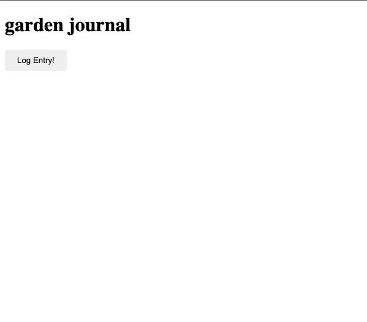
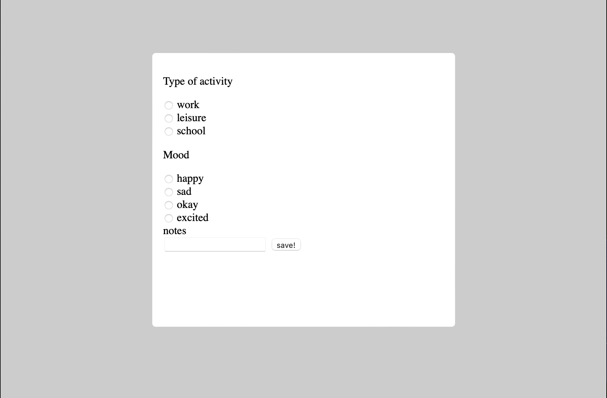
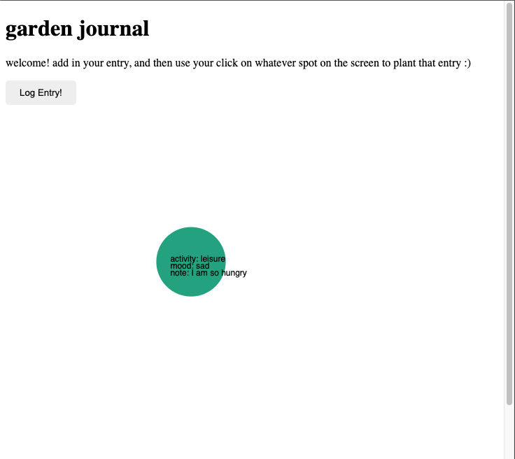

Final Project Prototype
Overview
For the final project, I wanted to create a visualized diary entry site, that would have a garden visualization based on user's emotions and activities throughout the day. However, for this prototype, I kept it very simple and only had functionality that demonstrated what it would be like to click to add a new entry to the page, and then be able to click on the screen to "plant" whatever entry they just entered in, and having the data they entered sent to firebase.
Project Scope
After beginning to create my prototype, the scope changed a little. I had wanted to have a large variety of different graphics and animations (leaves, colors, flower type, length), but now that I have started the project, I am realizing that I may not have the time to make so many different types, or to correlate the graphics to a specific spot on the screen. Instead, I was thinking of just having different flowers appear on the page, and then having the ability to hover over them to show what they said.
Time management
Setting up and figuring out how to use firebase and connect all the components together took a lot longer than I expected. As a result, I was not able to get all of the components that I had initially wanted for this prototype.
Implementation Plan
I will definitely be starting as soon as possible for the final, and prioritize the main functionality over some of the other features. Also, given the problems I have had using vite, P5.js, and firebase all together, I will need to deploy more often to be able to troubleshoot more often.
Process
The first thing I did was set up vite, and try to connect firebase to it. This was a challenge because it was a new platform and I had a hard time
understanding all of the different keywords and how to access different type of information.
After setting up firebase, I created very basic HTML, CSS, and Javascript functionality for the page. I made a button that leads to a popup screen that has different
diary entry options.


Also, something else that was difficult was figuring out the format to take in information from the user. After talking to Hannah, I set up
an HTML form, put this information into an array, and then sent out this information to firestore. Thankfully through this process, it worked!
However, this isn't where the challenges ended. Although I was able to send information over to firestore, I wasn't able to get that information
back to utilize in the HTML page that I created. I followed the tutorial that had a similar functionality of receiving all the entries posted, but didn't
receive anything. For this prototype, I decided to put this portion of the project on hold, and instead focus on what would happen next for the user after
any given entry.
I did this by starting to incorporate p5.js. It was difficult because I didn't want the canvas to just start going off immediately, so I put the p5 code into
the function that is called whenever users create a new entry. I had to learn a new syntax format for this to work for me, but after I learned that it worked well.
I decided to have users "plant" their entry by being able to place it somewhere on the screen by clicking onto a space whenever they submit an entry.

I played around with this version for a while, but then Hannah helped me realize that I had one little portion of my code that was sending the data in the wrong format
to firebase. After I changed that, I was able to see all of the entries populate the page! At this point, the next thing to do was just to make each entry have a ellipse attached
to it. To do this, I decided to write the code that I had for a single entry into the function that received all of the entries. I was able
to get it in a working state after a bit of time, but struggled to make all of the entries appear right after an input. I figure it has something to do with
the fact that the view() function doesn't really call for all of the entries to be drawn, but I didn't have the time to figure that one out, so I'm leaving it for next time.
I also wanted to figure out how to get the entry information to only show up once someone had hovered over it, but didn't get the chance to figure that part out yet either.

Moving Forward
For the final project, I will also finalize whether I want the different entries to be in a chronological format, or something placed randomly. I could see the benefit of doing either way! I will be figuring out how to make the mouseover hovering feature work, and then how to update the page as soon as someone updates it. Finally, I will be adding more questions into the entry pop-up, and then making the CSS pretty.
Kudos
Kudos to Hannah for helping me!